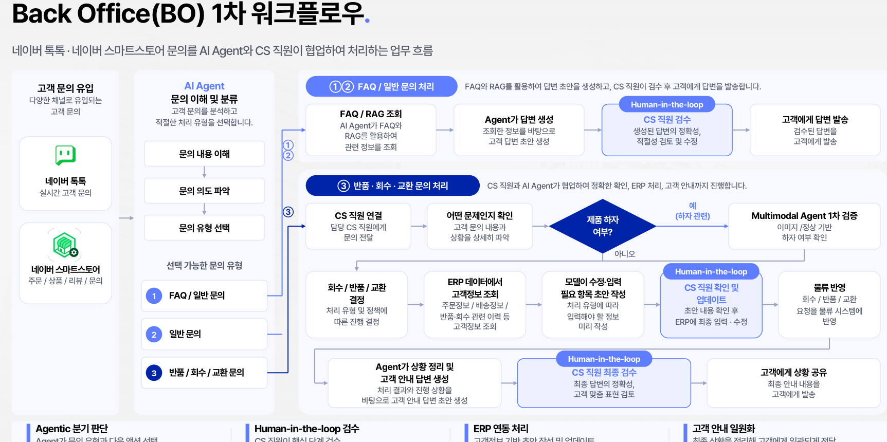
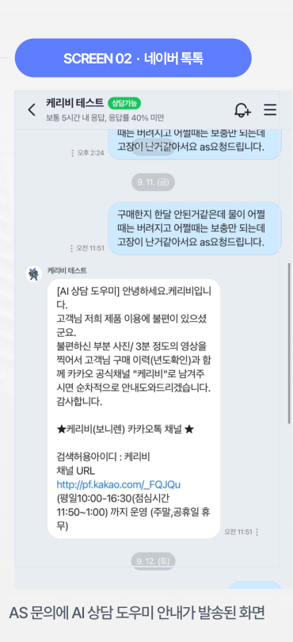

KELIVI / Agentic AI
Human-in-the-Loop Customer Service AI
Strategic Marketing Team — Agentic AI development · Jun 2026 – Present
Problem definition
Customer inquiries require efficient responses while preserving human judgment for returns, exchanges and after-sales service.
My contributions
Built a structured RAG knowledge base, developed the response drafting and escalation workflow, and iteratively evaluated retrieval and generation with developers and CS staff using real inquiries and action logs.
KELIVI back-office workflow
The production workflow integrates inquiry understanding, FAQ and RAG retrieval, AI draft generation, human review, ERP-linked handling for returns or exchanges, and unified customer communication across channels.

Actual Naver TalkTalk example
An actual Naver TalkTalk example showing the AI support assistant's response in a customer service conversation. The interface demonstrates how the drafted response is presented in a live support channel.

AI-assisted product inquiry
The back-office view illustrates a product-specific reply about a safety-gate installation, complementing the customer-facing TalkTalk example.

Results
AI response adoption rose from 13% to 72%; median initial response fell from 15 minutes to 2–3 minutes. Human evaluation reported over 95% appropriate responses.
Technical focus
RAG · Human-in-the-loop · Agentic workflows
Industrial data, internal source code and non-public implementation details are not included.